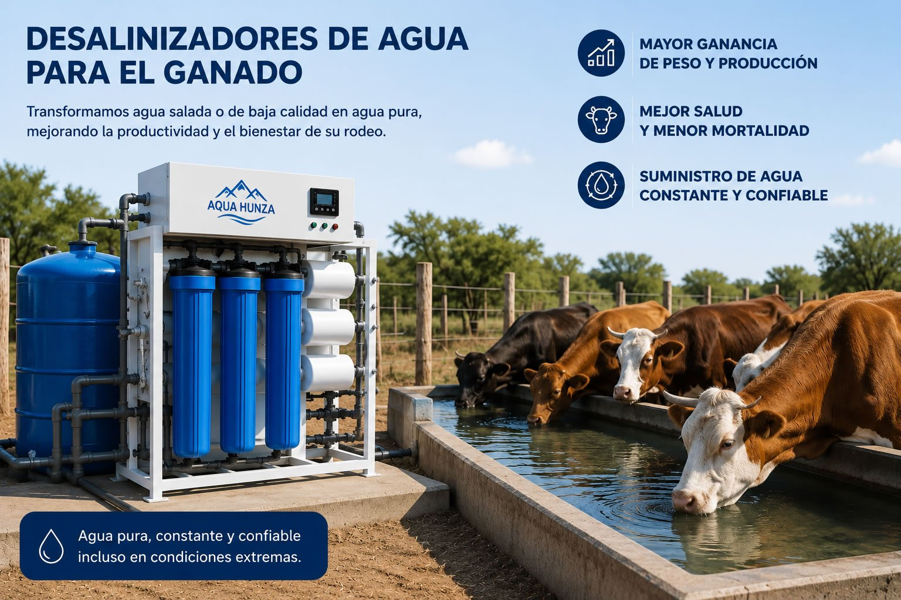
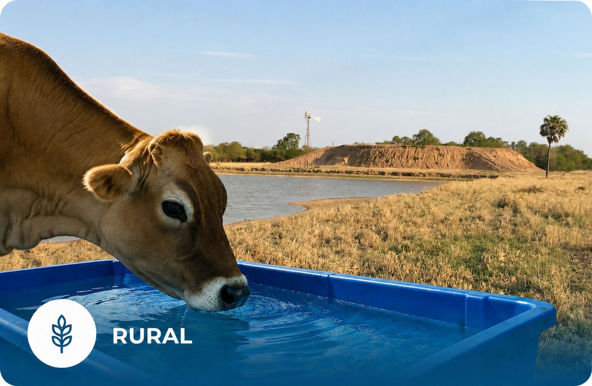
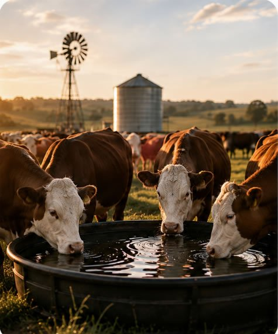
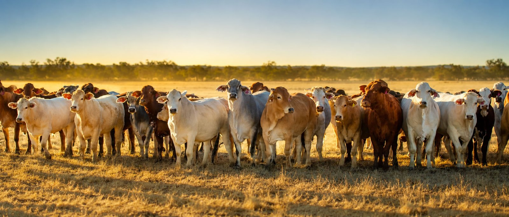

Tecnología
¿Cómo funciona?
Conocé cómo funcionan los procesos de purificación de última generación para toda la casa.
Leer más →Blog
Información, novedades y contenidos sobre agua funcional, purificación y bienestar.
Tecnología
Conocé cómo funcionan los procesos de purificación de última generación para toda la casa.
Leer más →
Sector rural
Filtros de agua para tajamares del Chaco Paraguayo.
Leer más →Cuidado personal
Protegé tu piel y cabello con purificadores de agua Aqua Hunza.
Leer más →
Ganadería
¿Sabías que la calidad del agua puede ser la clave para maximizar el crecimiento y la rentabilidad de tu ganado?
Leer más →
Notas técnicas
Notas de Pablo Ott sobre los efectos del consumo de agua y su impacto en la performance animal.
Leer más →
Ganadería
El agua limpia es esencial para la salud, el crecimiento y la producción de leche del ganado.
Leer más →Ganadería
El consumo de materia seca del ganado está directamente relacionado con el agua que bebe.
Leer más →Ganadería
El agua es el nutriente simple más importante para el ganado.
Leer más →Ganadería
Errores en el consumo de agua que reducen la ganancia de peso del ganado.
Leer más →Ganadería
Por qué el agua es más importante que el alimento a la hora de engordar ganado.
Leer más →